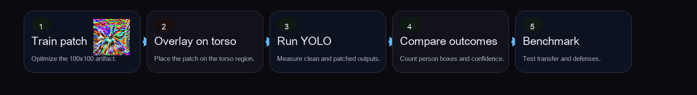
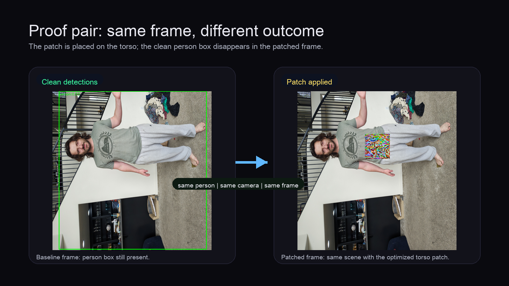
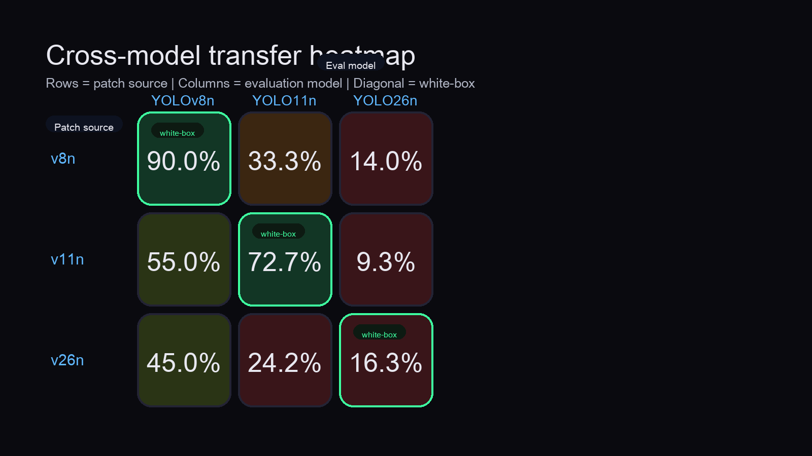
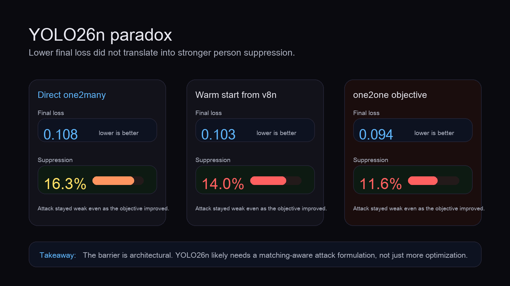
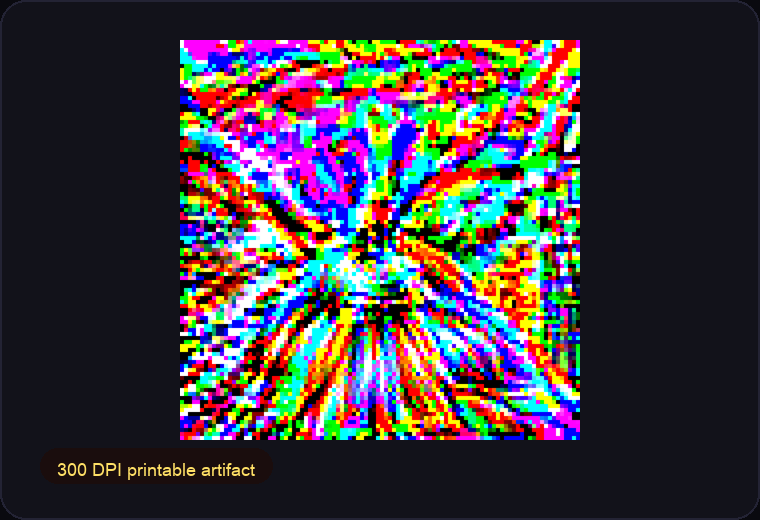

Adversarial Patch Attacks on
YOLO Person Detection
Stand-alone presentation for the Adversarial_Patch research pipeline
This deck focuses only on the adversarial patch project: how a small localized patch was trained, evaluated, and analyzed against YOLO person detection models.
April 2026
Title & Meta-data
Project Title: Adversarial Patch Attacks on YOLO Person Detection
Name(s): [Your Name(s)]
Category: Adversarial ML / Computer Vision Security
Capstone relation: Smaller AI-for-Cybersecurity project derived from the broader course capstone; this presentation covers only the adversarial patch subproject.
Project at a
Glance
Problem
YOLO-based person detection can be degraded by a small localized patch. That matters anywhere automated vision is trusted for awareness, safety, or monitoring.
Approach
Train and test a 100 x 100 adversarial patch across YOLOv8n, YOLO11n, and YOLO26n, then measure direct suppression, transfer, and follow-up variants.
Results
Direct suppression reached 90.0% on YOLOv8n and 72.7% on YOLO11n, while YOLO26n resisted with only 16.3%. Transfer existed, but it was asymmetric.
Impact

This project produced a learned patch artifact, proof images, transfer analysis, and print-ready outputs that make the attack concrete rather than hypothetical.
Brief
Overview
Abstract
This project tested whether a small localized adversarial patch could suppress person detection across modern Ultralytics YOLO models. A 100 x 100 patch was trained and evaluated against YOLOv8n, YOLO11n, and YOLO26n using direct, transfer, joint, and warm-start experiments. Results showed strong direct suppression on v8n and v11n, measurable but asymmetric transfer, and a major architectural limit on YOLO26n. The project also produced reusable artifacts including learned patches, proof images, transfer visualizations, and print-ready outputs. Together these results show both the offensive potential of adversarial patches and the model-specific barriers that matter for real attack development.
Scope
Models studied: YOLOv8n, YOLO11n, and YOLO26n. Focus: person detection suppression through a small visible patch.
Core Finding
The patch is clearly effective on two model generations, but not all YOLO architectures fail in the same way.
Why It Matters
Attack research is more useful when it produces evidence, artifacts, and limitations that can be demonstrated and discussed directly.
Objective and
Ultimate Impact
Objective
Determine whether a small portable patch can reliably suppress person detection across current YOLO generations instead of only a single detector.
Success meant demonstrating measurable suppression, cross-model behavior, and an evidence-based explanation when the attack failed.
Ultimate Impact
If a simple patch can degrade person detection, then surveillance, robotics, and automated vision systems may be vulnerable to localized physical or digital perturbations that are cheap to deploy.
Threat Model
An attacker introduces a visible patch on clothing or another surface near the target person. The rest of the scene remains unchanged; the goal is to reduce or remove person detections rather than corrupt the full image.
Problem Space and
Limits of Current Practice
Problem Space
Adversarial machine learning has shown that small perturbations can mislead vision models. For object detection, the challenge is harder than image classification because the attack must alter localization, confidence, and detection persistence in realistic scenes.
Limits of Current Practice
- Many studies stop at one detector or one model family.
- Older-model results do not guarantee the same failure mode on newer architectures.
- Simple preprocessing defenses are often assumed to help without strong cross-model validation.
Gap Addressed by This Project
This work compares direct suppression, transfer, and follow-up attack variants across three YOLO generations so the conclusions are tied to evidence rather than to a single-model anecdote.
Novel
Approach

Train the patch, overlay it on the target person, evaluate detections, then measure transfer and follow-up variants.
Experimental Setup
- Patch size: 100 x 100 pixels
- Image size: 640 x 640
- Common 48-image manifest for cross-model consistency
- Evaluation on each model's clean person-detection subset
Novel Elements
- Direct self-evaluation on each YOLO model
- Cross-model transfer matrix across generations
- Joint-patch and warm-start follow-up experiments
- Exportable proof and print artifacts for demonstration
How Success Was Proven
Success was proven with clean-versus-patched person detections, suppression percentage, transfer outcomes, and follow-up experiments that tested whether weak results came from initialization or architecture.
Direct
Suppression

Primary proof object: the same scene before and after the patch, with the clean person detection removed in the patched frame.
20 -> 2 detections | strongest direct result in the study
33 -> 9 detections | strong suppression on a newer YOLO generation
43 -> 36 detections | weak suppression despite low final loss
Discussion
v8n and v11n are strongly suppressible. YOLO26n is the exception, which makes the study more useful than a single success case.
Transfer Across
Models

Transfer exists across model generations, but it is not symmetric and it is weakest when YOLO26n is the target.
Asymmetry
v11n -> v8n reached 55.0%, while v8n -> v11n reached 33.3%. Adversarial features did not transfer equally in both directions.
Transfer Matrix Highlights
- v26n -> v8n: 45.0%
- v26n -> v11n: 24.2%
- v8n -> v26n: 14.0%
- v11n -> v26n: 9.3%
Follow-up Joint Result
Even the best v26n-targeting joint patch only reached 18.6%, so the barrier is not just single-model overfitting.
YOLO26n Limitation and
Tool Outputs

Low loss did not translate into strong suppression, which made YOLO26n the project's most important architecture-specific finding.
Architectural Finding
Direct suppression stalled at 16.3% despite low final detection loss, likely because training and inference use different detection heads.
Follow-up Checks
Warm-start reached 14.0%. A one2one follow-up reached 11.6%. That points to a structural limit, not a bad initialization.
Tool Outputs
Outputs include the learned patch artifact, proof pair, transfer heatmap, and print-ready export. JPEG and blur usually failed as simple defenses, while crop-resize had only isolated wins.

Takeaways, Limits, and
Future Work
Takeaway 1
Localized adversarial patches can strongly suppress person detection on some YOLO generations, especially YOLOv8n and YOLO11n.
Takeaway 2
Transfer across models is real but asymmetric, so attack behavior cannot be summarized by a single success rate.
Main Limitation
YOLO26n resisted the current attack formulation, which means better optimization alone is unlikely to solve the problem.
Future Work
Next steps are to design a matching-aware objective for YOLO26n, expand physical benchmarking, study placement robustness, and evaluate whether stronger cross-model attacks can preserve suppression without sacrificing portability.